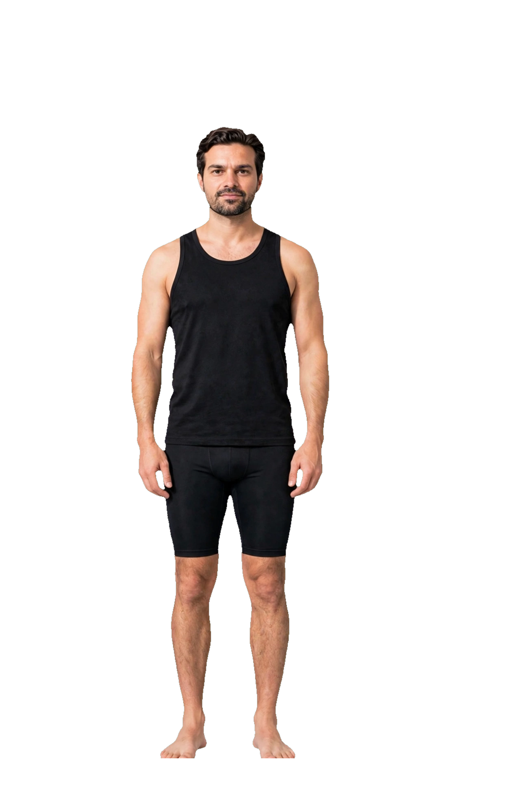
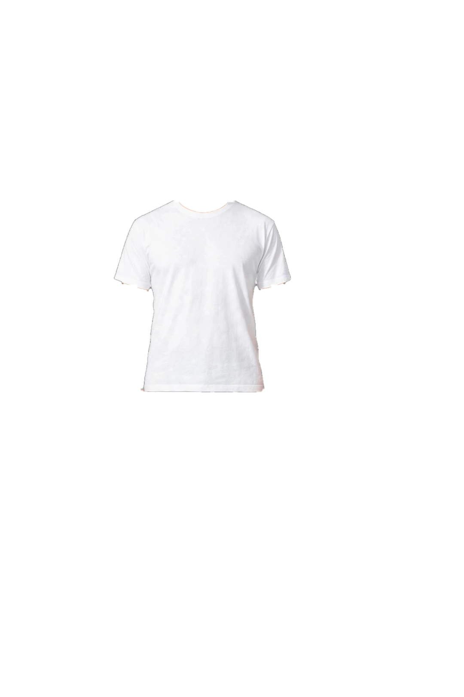
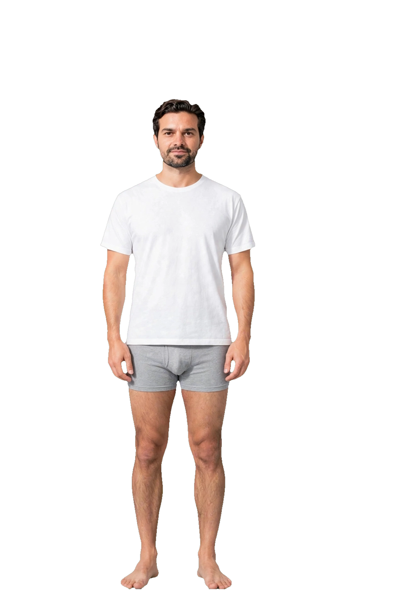
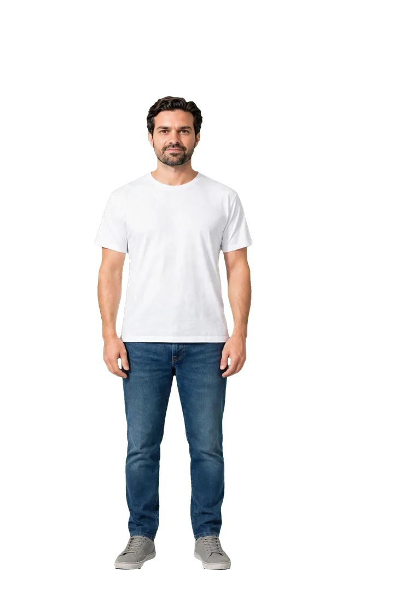

Nouveau : base + couche t-shirt, assemblées en direct. Chaque pièce est indépendante.
Prototype — avatar en couches (le magasin actuel n'est pas touché)



Nouveau : base + couche t-shirt, assemblées en direct. Chaque pièce est indépendante.

Ancien : une photo complète par tenue (125 photos). Impossible de changer une seule pièce sans nouvelle photo.
Vérifié : base et photo portée recalées au même standard (tête y=262, pieds y=1556, hauteur 179,7 cm, axe x≈474). Couche t-shirt : col y=470, ourlet y=912, aucun pixel vert parasite.
Défaut connu : la manche noire de la base dépasse d'environ 1 cm sous la manche blanche. Correction prévue : régénérer la base en débardeur (sans manches).
Honnêteté : les mesures du client ne changent pas encore les proportions de l'avatar. Aucune promesse d'ajustement réel à ce stade.